| Tool | Kepler.gl (free, open source, runs in your browser, no account needed) |
| Dataset | Global Earthquakes 2020-2026 on Kaggle, 11,808 rows |
| You will make | An interactive map with a time slider, custom colors, a legend, a search box, and a saved copy |
| Tested | November 2026 in Chrome, Kepler.gl version 3.3.0-alpha.20 (shown at the top left of every screenshot) |
Already seen another Kepler.gl tutorial? The closest existing one I found is Using Kepler GL to Visualise over 35,000 Earthquakes near Christchurch, New Zealand, which maps a single region. This tutorial adds: a worldwide dataset from a different source and time span, the fix for time playback that would not start (see Step 5), a side-by-side look at the three playback modes, and the full path through base maps, saving and exporting.
Contents
- Before you start
- Part 1: Load your data (Steps 1–4)
- Part 2: Animate over time (Steps 5–6)
- Part 3: Style the map (Steps 7–11)
- Part 4: Save and share (Steps 12–13)
- Important tips
- What the docs got wrong
- When to use Kepler.gl
- Resources
Before you start
You need:
- A modern web browser (I used Chrome).
- A CSV file with a latitude column, a longitude column, and (for animation) a timestamp column. Kepler.gl detects these automatically.
- Optional: a Google Drive, Dropbox, or CARTO account, only if you want to save the map to the cloud in Step 12.
My file has these columns (among others): id, time, year, decade, latitude, longitude, depth, mag, magType, place. You can use your own data in every step below.
Part 1: Load your data
Step 1: Open Kepler.gl
Go to kepler.gl and click Get Started. No sign-up is required.
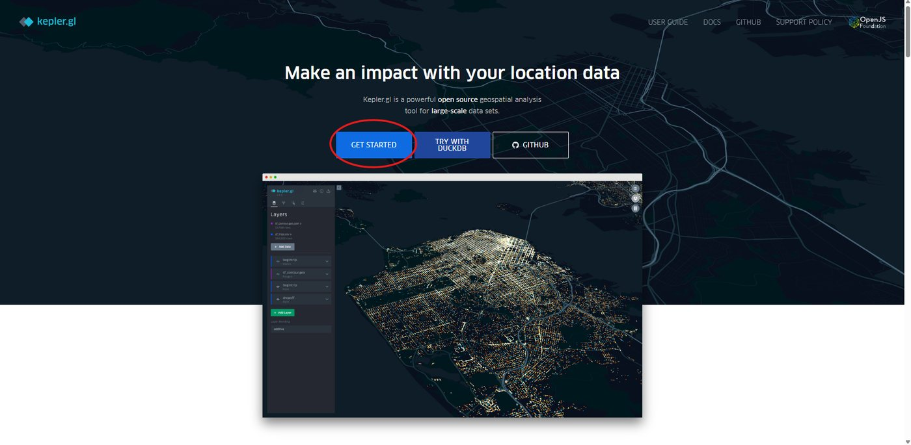
Step 2 (optional): Explore with sample data
If you do not have a dataset yet, the Add Data To Map window has a Try sample data button in the top right. It offers ready-made datasets such as California Earthquakes and NYC Taxi Trips, which is a good way to get a feel for the tool.
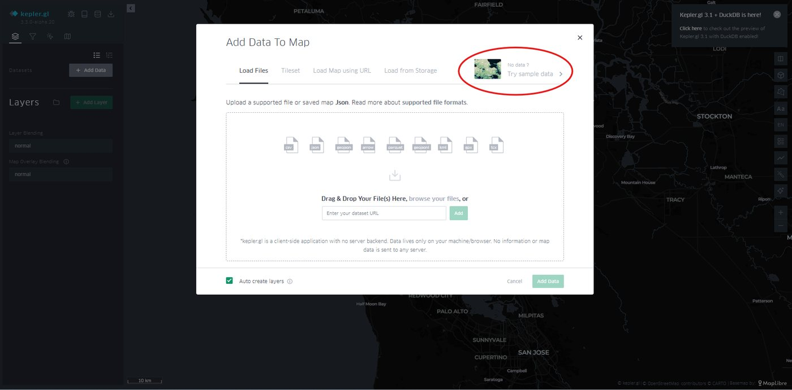
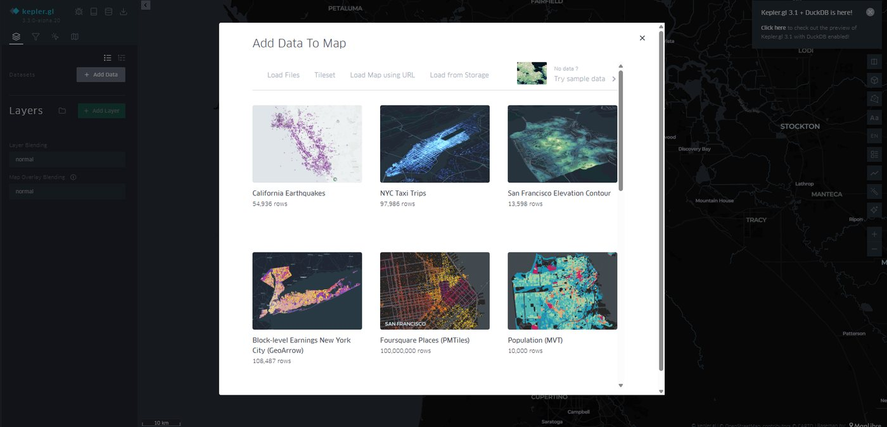
Step 3: Load your own CSV
I downloaded Global Earthquakes 2020-2026 from Kaggle.
- In Add Data To Map, stay on the Load Files tab.
- Click browse your files and select your CSV.
- When the file appears under To add to map, click Add Data.
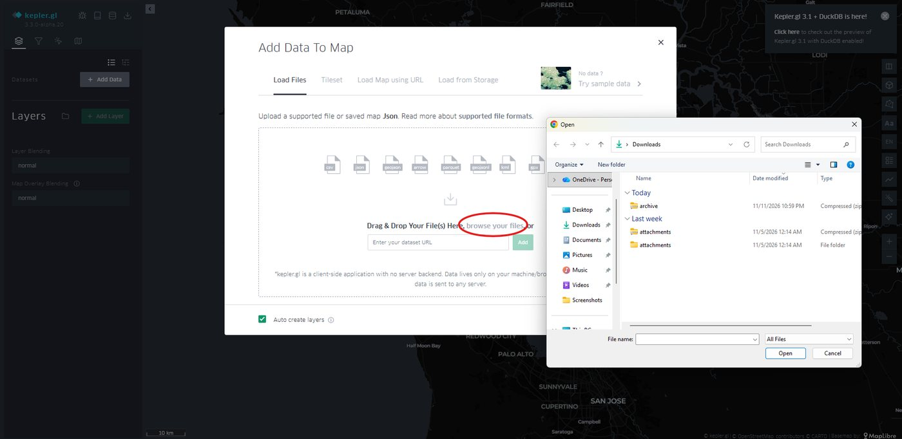
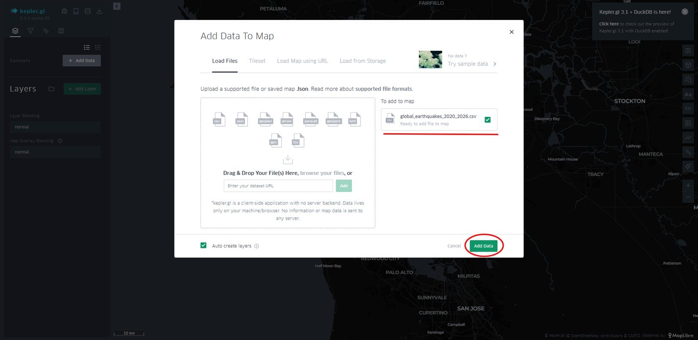
Kepler.gl says it is "a client-side application with no backend", so your file stays in your browser and is not uploaded to a server.
Step 4: Explore your data table
Kepler.gl builds a map layer for you automatically. Before styling anything, click the table icon next to your dataset name to see every column, its detected type (string, time, int, float), and quick statistics such as min, max, and a histogram.
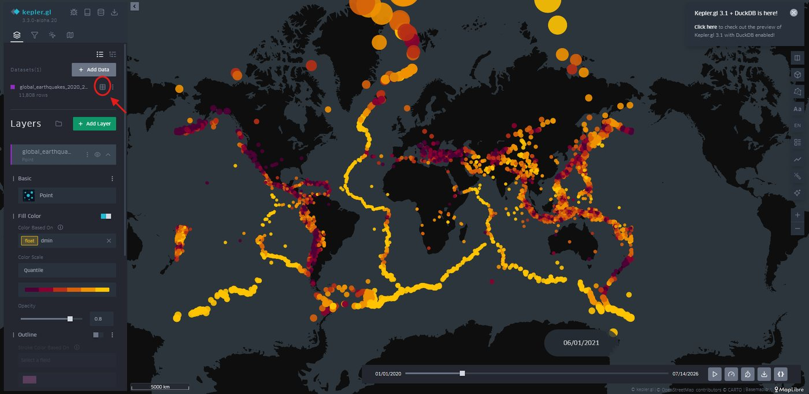
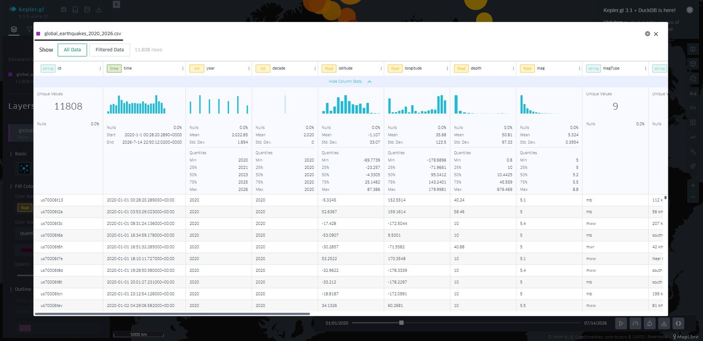
Why this matters: you will pick columns for color and time in the next steps, and the types tell you what Kepler.gl will offer. In my file, time was detected as a time column, which is what the filter in Step 5 uses.
Part 2: Animate over time
Step 5: Add a time filter and link it to the layer timeline
- Click the funnel icon (Filters) in the top-left panel, then Add Filter.
- Open the field dropdown and choose your timestamp column (
timefor me). - Under the new filter, click Link with the layer timeline.
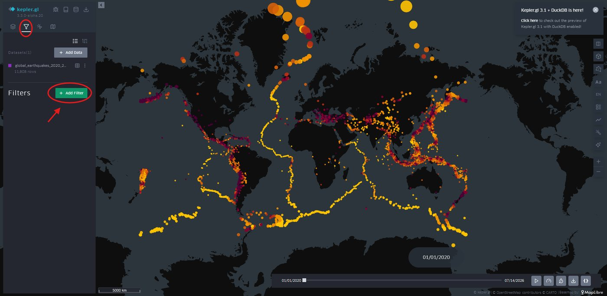
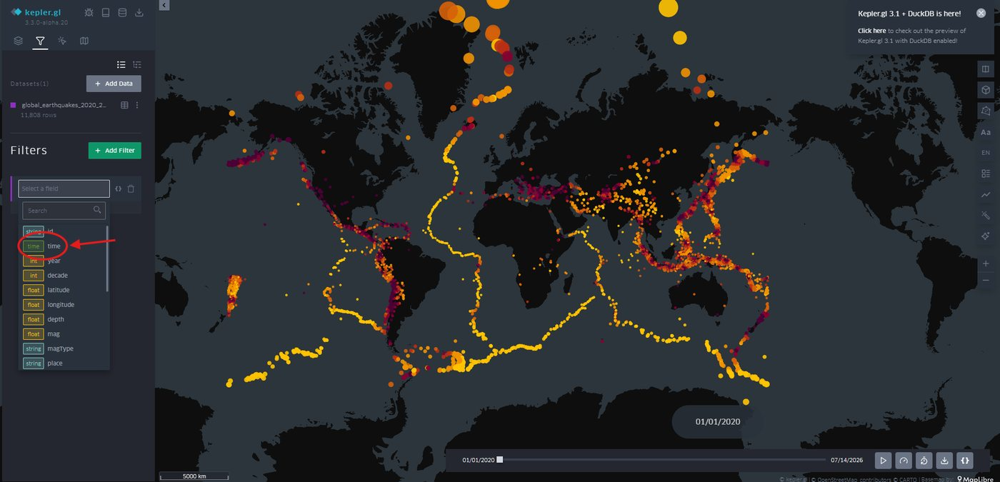
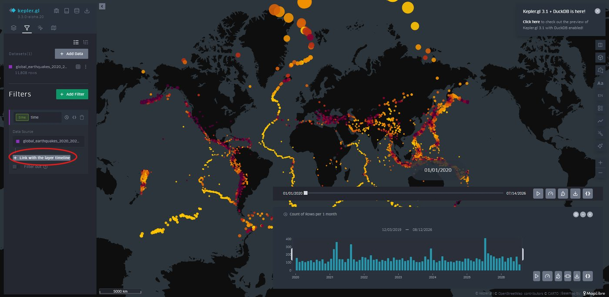
Now click the time-window icon at the bottom right of the timeline, next to the timestamp. The playback controls appear.
If Play does nothing: this is the step the official docs skip. See What the docs got wrong.
Step 6: Choose a playback mode
The bar chart in the timeline shows the count of rows per month, so you can spot busy periods before you press play. Three icons at the bottom right control how time moves:
| Icon (left to right) | Mode | What it does |
|---|---|---|
| 1st | Moving time window | Shows a window of time sliding from 2020 to 2026, then runs back from 2026 to 2020. |
| 2nd | Incremental time window | Plays from 2020 to 2026 and keeps adding points as time advances. This is the one I chose, because it shows how the whole map fills in. |
| 3rd | Step by interval | Jumps between intervals instead of playing continuously. |
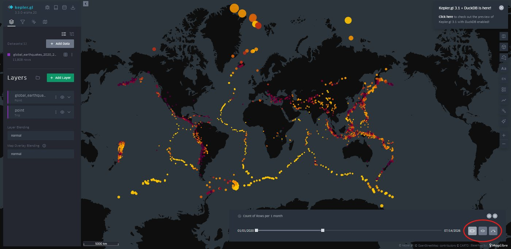
Part 3: Style the map
Step 7: Choose the point shape and color column
Go back to the layers icon (top left) and expand your dataset's layer.
- Under Basic, pick the layer type. I kept Point because it fits location data like earthquakes best. The menu also offers Arc, Line, Grid, Hexbin, Polygon, Cluster, and more.
- Under Fill Color → Color Based On, choose the column that should control color.
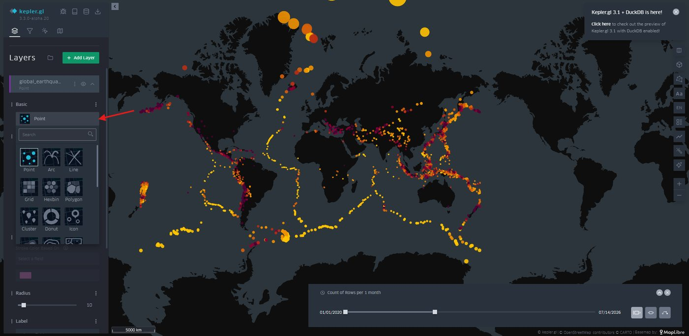
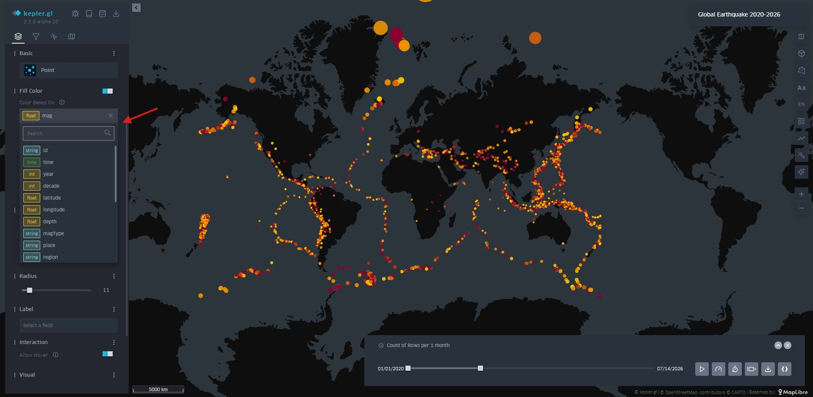
Choose a column that answers your question. I colored by
mag(earthquake magnitude), so the legend shows how strong each quake was. Kepler.gl may pre-select a different column (for me it wasdmin, a measurement-quality field that says nothing about strength), so always check what the legend is actually telling your viewer.
Step 8: Set the color scale, opacity, radius, and labels
- Color scale: choose a palette and a scale type. I used Quantile, which puts roughly the same number of points in each color bin. That is why my legend bins are narrow at the low end: most quakes in this dataset are below magnitude 5.6, and the strongest ones share the last bin.
- Opacity: raise it for brighter, more solid colors (I used 0.8).
- Radius: change it so points are visible without hiding each other (I started at 11).
- Label (optional): lets you pick a column to print next to each point. I left it empty, because with 11,808 points the text would overcrowd the map. It is useful for smaller datasets.
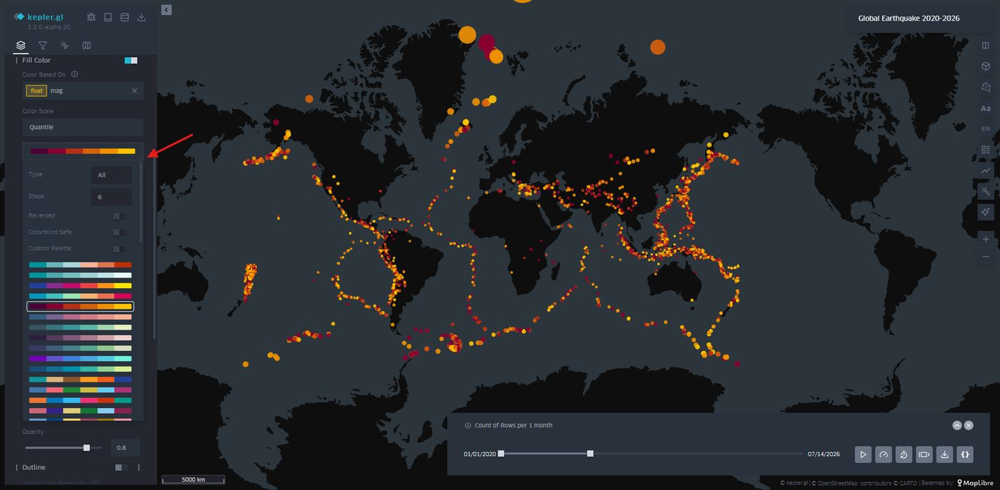
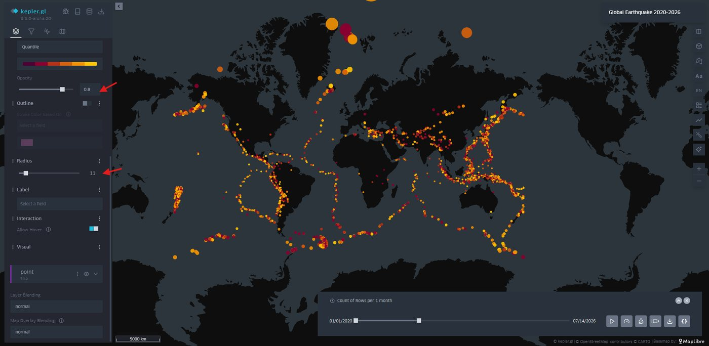
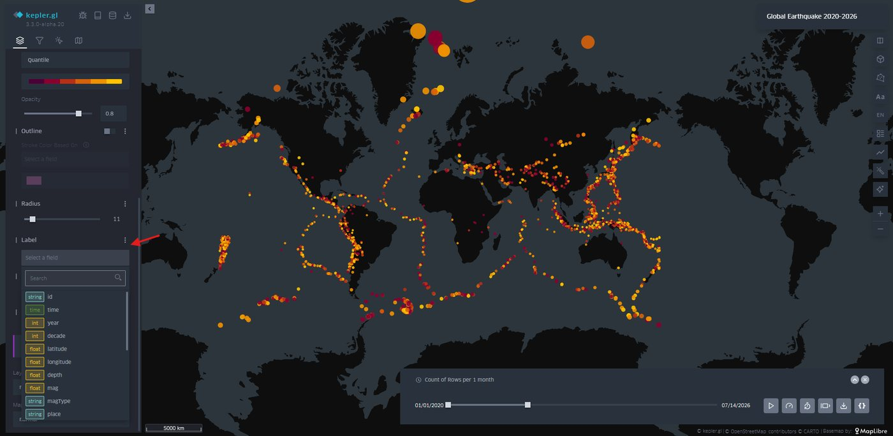
Step 9: Add a legend and a location search
Click the Interactions icon in the top-left panel. Each control has a toggle. I turned on:
- Legend: explains what the colors mean (bottom right of the map).
- Geocoder: a search box at the top right where you can type an address or coordinates and jump there.
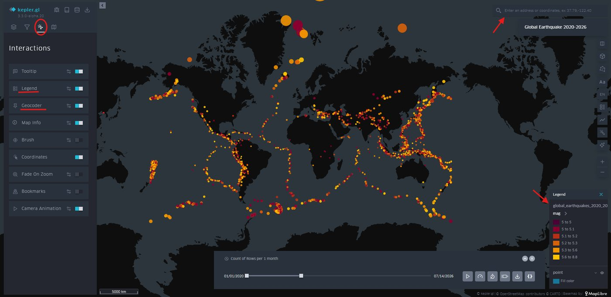
Step 10: Pick a base map
Click the Base map icon (far right in the top-left panel) and choose a style. I chose Satellite With Streets. You can also toggle individual map layers (labels, roads, buildings, water, land) below the style list.
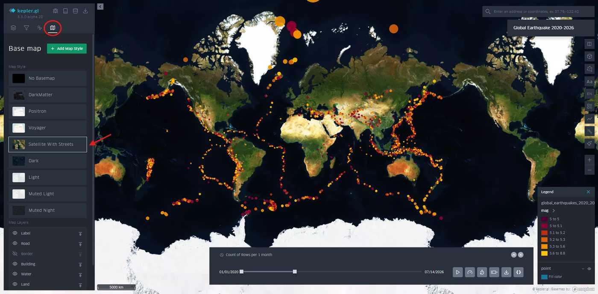
Step 11: Re-tune your colors for the new base map
A palette that looks great on a dark map can disappear on a satellite image. I went back to the layers icon and:
- switched to a light-yellow-to-dark-red palette so points stand out against green and brown land,
- increased the radius from 11 to 15.3.
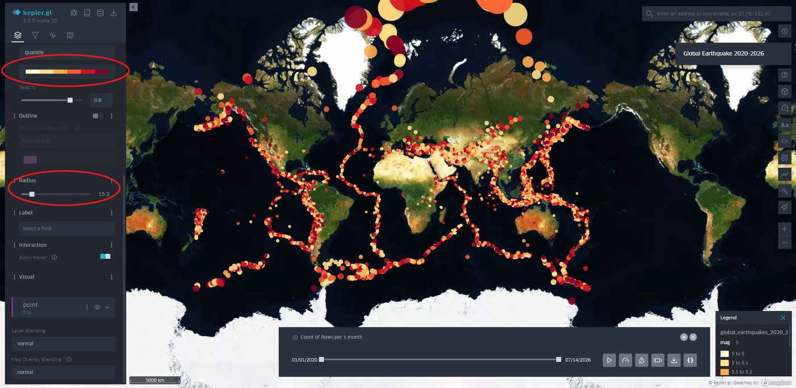
Part 4: Save and share
Step 12: Save or export your map
You have two options in the top-left panel:
- Cloud icon (Save Map): saves the map to your own cloud storage. The options are Foursquare, Dropbox, Google Drive, and CARTO.
- Share/download icon: opens an export menu with Export Image, Export Video, Export Data, Export Map, and Share Map URL.
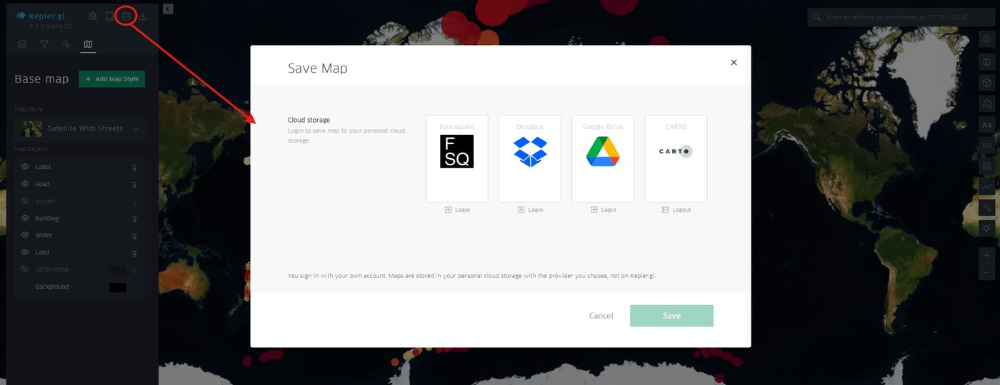
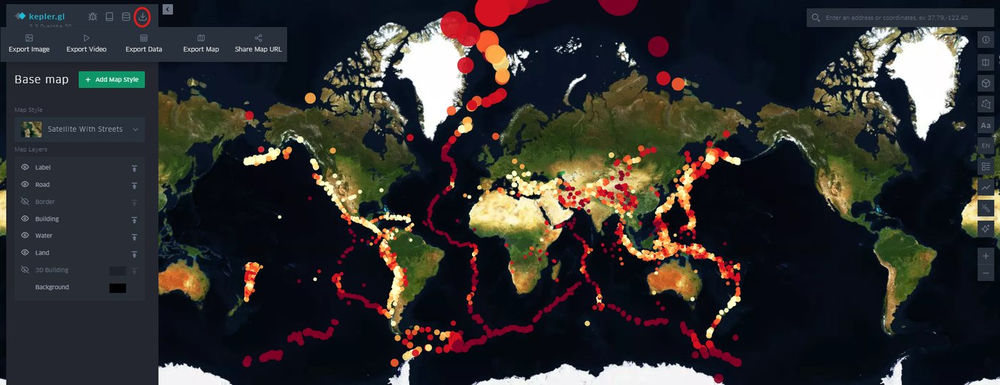
Step 13: Reopen your saved map later
I saved to Google Drive. Kepler.gl creates a .json file in a Kepler.gl folder there. To continue editing later, download that file and load it through Add Data To Map → Load Files, exactly as in Step 3.
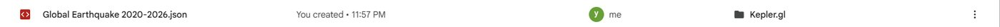
Important tips
- Play button does nothing. Add a time filter, then click Link with the layer timeline (Step 5).
- Nothing is stored on a server. Because Kepler.gl runs entirely in your browser, save your map (Step 12) before closing the tab.
- A second layer appeared. After linking the timeline, a second layer named
point(type Trip) showed up in the Layers panel. I left it alone and did all my styling on the first layer, which is named after the dataset. - Colors vanished after changing the base map. Dark palettes can disappear on a satellite background. Change the palette and raise the radius (Step 11).
- Pop-up banner in the corner. The "Kepler.gl 3.1 + DuckDB is here!" notice is just an announcement. Close it with the X.
What the docs got wrong
The official Time Playback guide says: add a filter on a time field, the playback window appears, and then press play.
What actually happened: after adding the filter on time, pressing play did not animate the map. It worked only after I clicked Link with the layer timeline under the filter, a step the guide never mentions. The Christchurch earthquake tutorial linked above also stops at adding the filter. After I linked the timeline, playback ran correctly.
When to use Kepler.gl
Use it when you:
- have location data (lat/long) and want a striking map in minutes with no code,
- want to animate points through time, which took me a few clicks,
- have a point dataset of a few thousand rows or more (mine was 11,808) and want to explore it directly in the browser,
- want to keep your data private, since it never leaves your browser.
Use something else when you:
- need charts that are not maps (bar charts, scatterplots, and so on). Tableau, which we used in class, is far more flexible.
- need calculated fields, dashboards with linked charts, or precise annotations and titles. Tableau handles these better.
- need a fully reproducible, code-based workflow. A scripted approach in Python or a JavaScript library is easier to version-control than clicking through panels.
Compared with Tableau: Kepler.gl was faster to a good-looking animated map and needed no account, but it is built for maps only. Tableau is the better choice once the story needs more than a map.
Resources
- Kepler.gl official user guide
- Kepler.gl Time Playback guide
- Global Earthquakes 2020-2026 dataset (Kaggle)
- Existing tutorial: Visualising earthquakes near Christchurch with Kepler GL
All screenshots in this tutorial are from my own work.